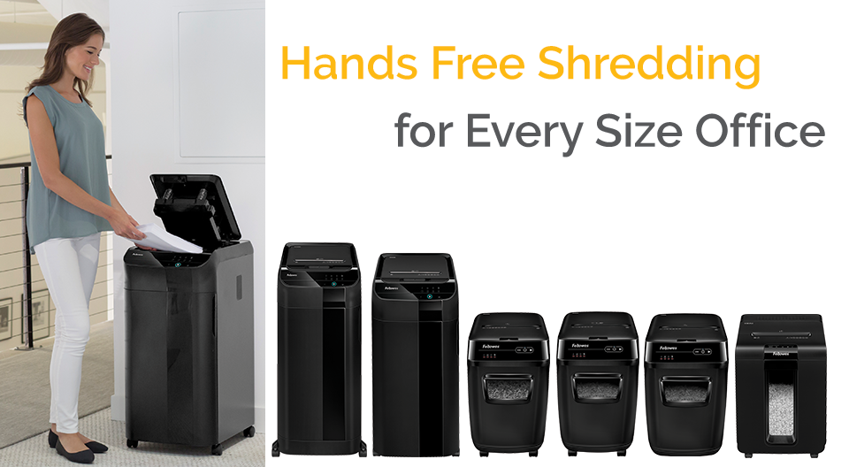
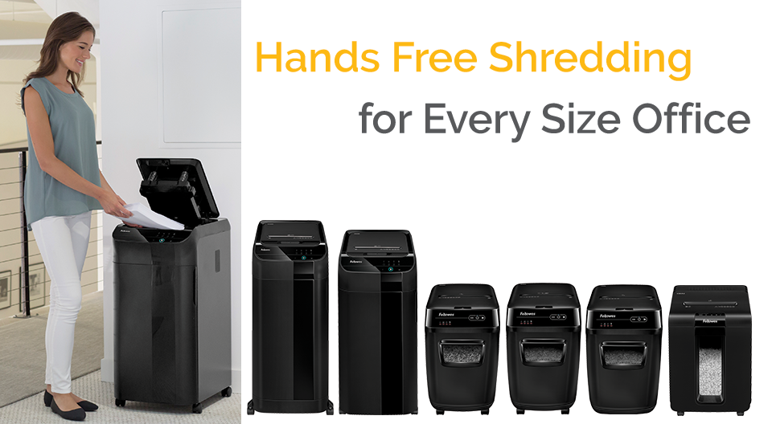

Choose The Best Paper Shredder
Selecting the best paper shredder depends on several factors, from where the shredder will be used to how much it will be used. One of the biggest mistakes shredder buyers make is purchasing a shredder that does not meet their needs, often buying a shredder that is not robust enough. For example, they may purchase a personal shredder when they may need an office shredder for bigger jobs. They may even need a heavy duty shredder if working in a large office. For greater security needs, a micro cut shredder is the best choice, and a credit card shredder may be required if there is a need to destroy more than paper. Also while buying a home paper shredder, buyers may need to consider safety features to safely shred around children and pets. Seems like a lot to think about? Just answer the following questions to make your paper shredder choices easy.
When selecting a paper shredder, consider a combination of how much time you spend shredding with how much paper you typically shred.
What Are The Different Types Of Shredders By Cut Type?
Your concerns about identity theft determine what security level you will need for your paper shredder.
Do I Need A Paper Shredder With Special Features?
Along with numerous options in shredder performance and security levels, there are also many features available that make shredding more effective for the home or workplace. When you think about where your shredder will be located and who will be using it, some additional needs may have to be considered.